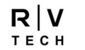
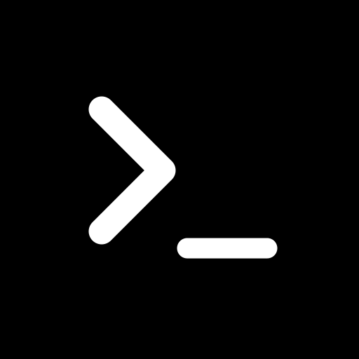
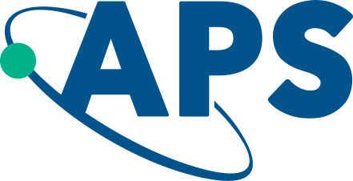

Yufeng Wang
Reinforcement Learning·LLM Post-training·World Models·AI Agents
Academia
-
2023 — 2026
-
2022 — 2023
-
2019 — 2023
Industry
-
2026 May. — 2026 Aug.

AI Engineer Intern
Rivian and Volkswagen Group Technologies
Language Model · Agentic AI
-
2025 Aug. — 2026 Mar.
Research Intern
Sony AI
Agentic AI · ML Infra · Edge inference
Research
-

Terminal-Bench-Science · 2026 · Contributor
EXAFS Shell Recovery in Fe–N–C Catalysts
A materials-science task for AI agents: calibrate, select and fit coordination shells from X-ray absorption spectra, with uncertainties. The verifier is calibrated against 83 solution strategies.
-
Nature Medicine · 2024
Screening and Diagnosis of Cardiovascular Disease Using AI-Enabled Cardiac Magnetic Resonance Imaging
Two-stage, video-based deep learning that screens for and diagnoses 11 types of cardiovascular disease from cardiac MRI in 9,719 patients, reaching AUCs near 0.99 and outperforming cardiologists on pulmonary arterial hypertension.
-

Physical Review B · 2025
Variational Transformer Density Operator Ansatz for Steady States of Dissipative Quantum Systems
A transformer density-operator ansatz for the steady states of dissipative quantum many-body systems, accurately predicting the mixed steady states of dissipative Ising and Heisenberg spin chains.
-
NeurIPS · 2026
BuresTomFlow: Bures-Geometric Flow Matching for Posterior Quantum Tomography
Flow matching on the Bures geometry of density matrices, giving fast, amortized posterior samples for Bayesian quantum state tomography.
-
TMLR · 2026
Retrieval as a Decision: Training-Free Adaptive Gating for Efficient RAG
A training-free gate that decides when to retrieve from the uncertainty of a short draft answer, matching or beating always-on RAG on five QA benchmarks while retrieving 70–90% less.
-
TMLR · 2026
Sample-Based Constrained Inference for Matrix-Free Quantum Process Tomography
A matrix-free reconstruction-and-sampling framework for quantum process tomography whose sampled channels are physically valid (CPTP) by construction, without forming the dense Choi design matrix.
-
Journal of Cheminformatics · 2026
How Well Can Off-the-Shelf LLMs Elucidate Molecular Structures from Mass Spectra Using Chain-of-Thought Reasoning?
A zero-shot chain-of-thought benchmark on MassSpecGym, 231K spectra across four frontier LLMs, that turns a negative result into a training agenda.
-
arXiv · 2025
Spectra-to-Structure and Structure-to-Spectra Inference Across the Periodic Table
XAStruct, trained on X-ray absorption spectra from over 70 elements, predicts spectra from crystal structures and infers local structure from spectra, including the first model to predict neighbor atom types.
Service & Awards
Awards
- Gold Reviewer Award ICML
- Top Reviewer Award NeurIPS
Reviewer
- ICML
- NeurIPS
- ICLR
- AAAI
- IEEE
- ACL-ARR
- ACM-Health
- Journal of Real-Time Image Processing